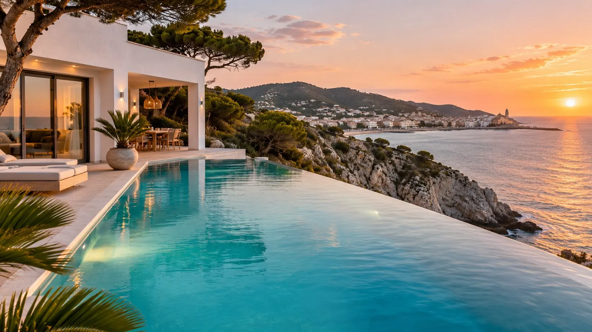
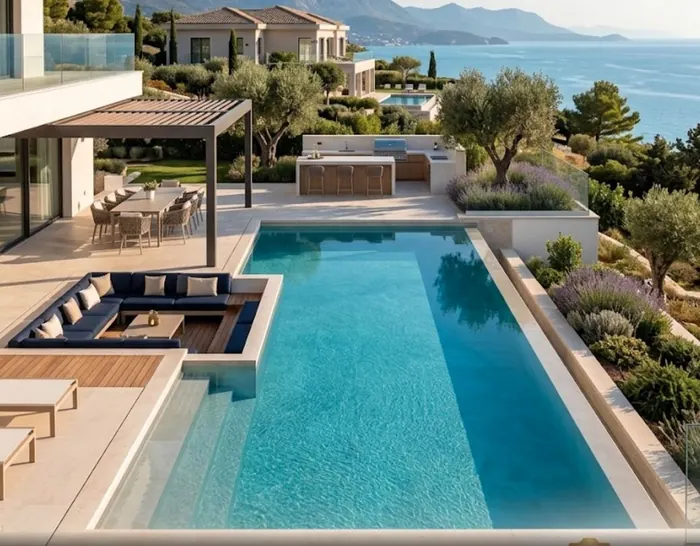
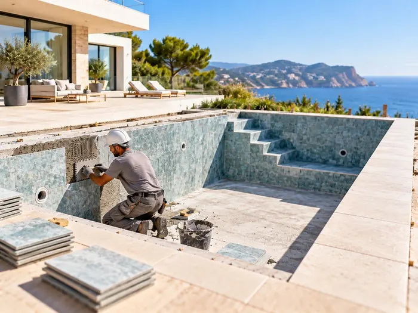
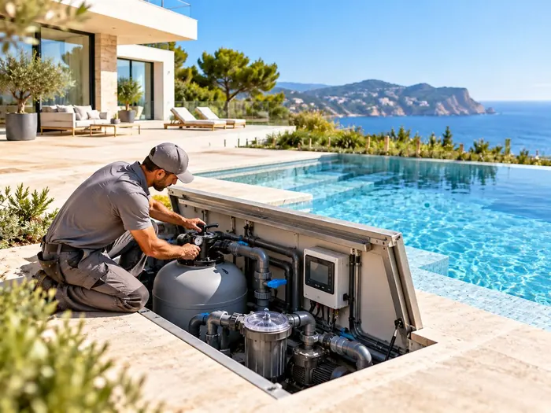
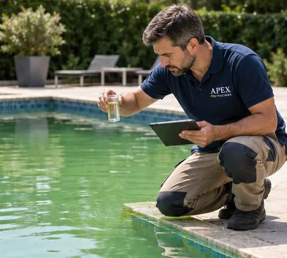
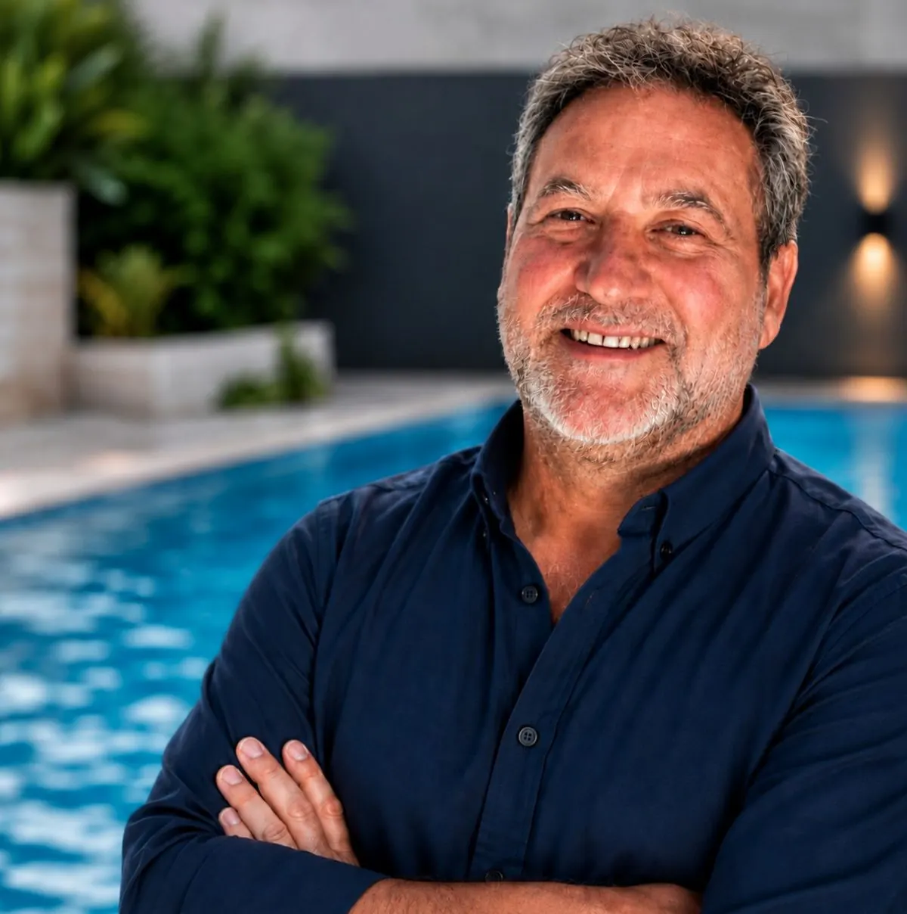

Qué suele haber detrás
Cómo lo resolvemos

Empresa de piscinas · Barcelona y toda Cataluña
Construirla, renovarla o conseguir que vuelva a funcionar. Lo importante es saber a quién se la confías.
Empieza aquí
Cuatro situaciones distintas, un mismo criterio: entender primero qué necesita tu piscina y después proponer solo lo que tiene sentido.




Diagnóstico orientativo
No hace falta saber el nombre técnico. Lo que ves, oyes o notas ya es información útil. Esto es una orientación: el diagnóstico real se hace en tu piscina.
Qué suele haber detrás
Cómo lo resolvemos
Laboratorio de agua
El agua no es azul por sí sola: la tiñen el fondo, la profundidad y la luz. Prueba combinaciones antes de elegir y comprueba también cómo cambia cuando el agua se desequilibra.
Simulación orientativa. El color real depende de la luz, la profundidad, el entorno y el material concreto.
Cómo construimos
Nos explicas qué piscina tienes en mente, el uso previsto, tu presupuesto y lo que esperáis de ella en casa.
Vamos a tu casa a ver el terreno, los accesos y la orientación antes de dibujar nada.
Te presentamos tu piscina en 3D y un presupuesto cerrado por partidas, para que decidas sabiendo exactamente qué incluye.
Ejecutamos la obra con dirección técnica en cada fase y te informamos de cada avance.
Llenamos la piscina, ponemos en marcha los equipos y te explicamos cómo funciona todo.

Quién dirige tu obra
Hoy dirige todas las obras de APEX. Visita el terreno, decide la solución técnica y la sigue hasta el final. Es la capacidad técnica de la empresa: cuando hablas con nosotros, el criterio es el suyo.
Calidad, diseño y bienestar
Materiales de calidad y soluciones actuales en tratamiento del agua, climatización y ahorro energético, para que la piscina se integre en tu casa y no al revés.
Filtración por vidrio ecológico y recuperación de agua pluvial.
Bombas de velocidad variable que reducen el consumo eléctrico de la depuración.
Electrólisis salina con autorregulación continua del pH.
En 36 años hemos conocido a los mejores de cada especialidad. Tú tienes un solo interlocutor.
Preguntas frecuentes
¿Tienes una pregunta concreta sobre tu terreno? Mándanos una foto del jardín por WhatsApp.
Consultar por WhatsAppDepende del espacio, el terreno, el presupuesto y tus preferencias estéticas. El hormigón gunitado ofrece total libertad de diseño y máxima durabilidad; el poliéster, rapidez de instalación; las desbordantes o infinitas, protagonismo para las vistas.
Una piscina de obra suele llevar de 3 a 5 semanas de ejecución, a las que se suma el plazo de la licencia municipal. En la propuesta te damos un calendario por fases.
Sí. Revisamos la normativa de tu municipio y tramitamos la licencia o la comunicación de obras que corresponda, antes de empezar.
El equipo genera el cloro a partir de la sal disuelta: manipulas menos productos, el agua es más suave para la piel y los ojos y apenas huele a cloro. El pH y el mantenimiento se siguen controlando.
Te la detallamos siempre por escrito en la propuesta, con el alcance de la garantía estructural y de los equipos.
Sí. Se puede elevar el fondo, cambiar el revestimiento o renovar los equipos. Primero revisamos el estado real del vaso para no sustituir lo que todavía funciona. Ver reformas →
Zonas de trabajo
Trabajamos en toda Cataluña. Si tu municipio no aparece, escríbelo en el formulario: también vamos.
Hablemos
Cinco preguntas cortas. Se guarda cada paso: si lo dejas a medias, no pierdes lo que ya nos has contado.